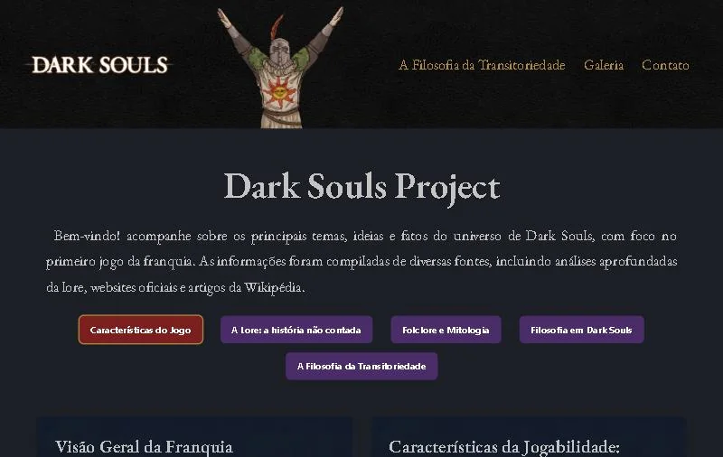
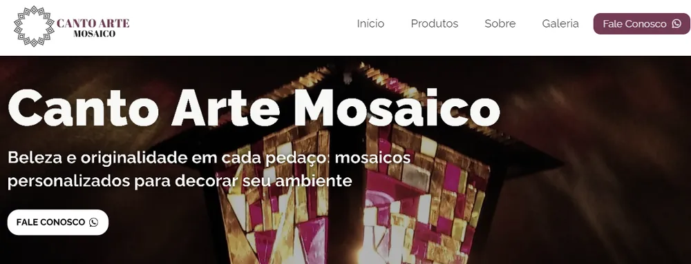
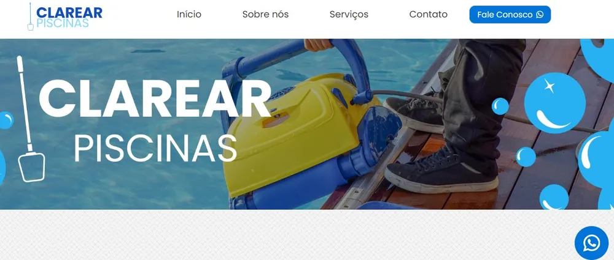
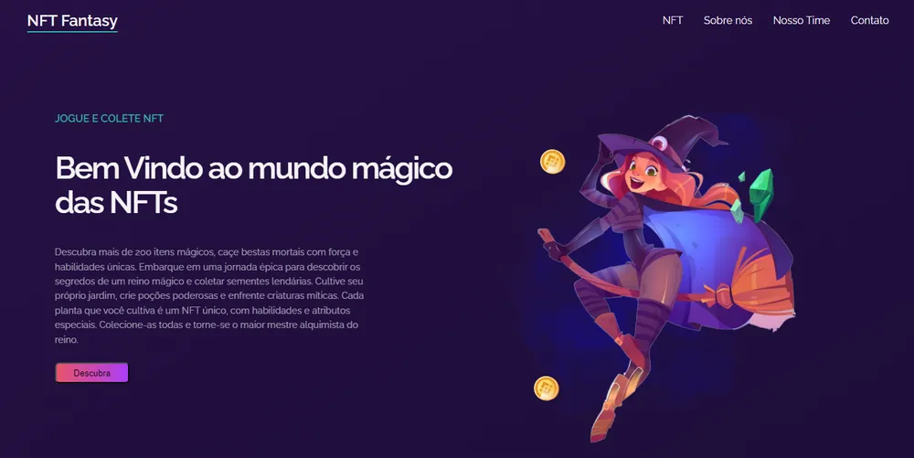
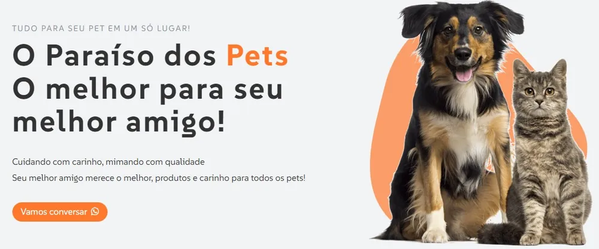

Sites institucionais
Sites personalizados que refletem a identidade da sua marca, com design moderno, navegação intuitiva e foco em conversão.
Página inicial / Portfólio
📍 São José do Rio Preto, SP · atendimento em todo o Brasil
Treino clientes e vendo sites e lojas virtuais na Eco Webdesign. Também sou desenvolvedor web e uso IA para programar, automatizar rotinas e entregar mais rápido.
Da programação ao relacionamento com o cliente.
Comecei no desenvolvimento front-end e hoje atuo na Eco Webdesign, empresa de criação de sites, lojas virtuais e portais. Entrei no suporte, passei a treinar clientes na plataforma Interago e agora estou em transição para a área comercial. Conheço o produto por dentro, sei explicar de forma simples e entendo o que o cliente precisa para vender mais online. No dia a dia uso IA para programar, automatizar rotinas e documentar processos.
O que venho fazendo na Eco Webdesign.
Desenvolvimento de sites e páginas para clientes da Sunset.
Avaliações públicas sobre meu atendimento e treinamento na Eco Webdesign, publicadas no Google.
“A experiência com Eco Webdesign foi a melhor possível, o funcionário Hugo sempre muito prestativo em resolver problemas, super indico!”
“Fui atendido por Hugo da Eco, e foi um atendimento extraordinário! Parabéns à equipe da Eco que fez um grande trabalho em parceria com a empresa Maria Brasileira Barreiras!”
“Atendimento excepcional, Hugo extremamente atencioso, prestativo, educado. Nota 1000, quem dera fôssemos tratados todos os dias por pessoas como o Hugo. Gratidão”
“Super atenciosos. O Hugo é sensacional. O Jonathan também é muito atencioso. Equipe nota mil. Pode confiar e fazer o seu blog ou site com essa empresa, que você sairá feliz.”
“A Eco realizou o desenvolvimento do sita da nossa empresa, suprindo as expectativas e sempre que precisamos o suporte do Hugo é excelente”
Ver todas as avaliações da Eco no Google · Avaliar o atendimento
O que posso fazer pelo seu negócio.
Sites personalizados que refletem a identidade da sua marca, com design moderno, navegação intuitiva e foco em conversão.
Experiência fluida em desktop, tablet e celular para alcançar seu público onde ele estiver.
Ensino você e sua equipe a gerenciar o site, a loja ou o portal sem depender de ninguém.
Acompanhamento contínuo para manter seu site atualizado, seguro e funcionando bem.
Uso IA para programar, automatizar rotinas e documentar processos, o que me permite fazer mais e entregar com mais agilidade.
Trabalhos e projetos de estudo desenvolvidos com HTML, CSS e JavaScript.

Site de fã sobre Dark Souls, com lore, folclore e filosofia do jogo em abas acessíveis, galeria de imagens e layout responsivo.
Site sobre a prática do yoga, com identidade visual suave e relaxante, interface amigável e responsiva.

Site institucional do artesão Fernando Paraboli, especializado em mosaicos, com navegação intuitiva em desktop e mobile.
Página inicial criada em um processo seletivo para a plataforma de lojas virtuais, portais e sites institucionais.

Site institucional com foco em transformar visitantes em clientes.

Site responsivo sobre o universo dos NFTs, com Flexbox, jQuery para conteúdo dinâmico e animações no scroll com AOS.

Site com hospedagem, banho e tosa, cuidado veterinário e táxi pet.
Cursos e programas que construíram minha base.
Dúvidas comuns sobre sites, treinamento e atendimento.
É a página oficial da sua empresa na internet: apresenta seus serviços, quem você é e como falar com você. Ele aumenta a credibilidade, ajuda clientes a te encontrarem e é a base de qualquer ação de marketing digital.
O domínio é o endereço do seu site (por exemplo, www.suaempresa.com.br) e precisa ser registrado para que ninguém mais use o mesmo nome. A hospedagem é o serviço que mantém o site no ar, guardando arquivos e dados em servidores conectados à internet.
É um site que se adapta a qualquer tamanho de tela, com boa navegação em desktop, tablet e celular. Isso melhora a experiência de quem visita e também ajuda o site a aparecer melhor nas buscas (SEO).
Sim. Nos projetos da Eco Webdesign o site é gerenciado pelo Interago, um painel onde você altera textos, imagens e páginas sem precisar programar. Eu te treino para usá-lo com segurança.
É a plataforma da Eco Webdesign para criar e gerenciar sites, lojas virtuais e portais de notícias. A equipe da Eco desenvolve o projeto e você o administra pelo painel do Interago.
O treinamento dura cerca de 1 hora e pode ser presencial, na Eco, ou em uma call online. Também temos documentação para você consultar depois.
Não há limite para tirar dúvidas: a equipe da Eco te orienta sempre que precisar.
A IA me ajuda a fazer mais coisas e a ser mais produtivo, seja programando, automatizando rotinas ou documentando processos.
Me chame no WhatsApp e conte o que você precisa. Respondo com um caminho claro, sem enrolação.
Vamos conversar